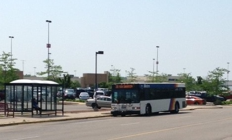

At least as far back as ancient Greece and its Agora, democratic assembly occurred in open public space. People gathered at the Agora to shop, talk, make friendships, relax and refresh. What has that got to do with using the bus in Madison?
Lots. Because in the last half century, shopping centers have separated the commercial from the noncommercial reasons for congregating and also at least passively separated bus riders from the rest of the public. Is it time for a change?
Many of the shops that used to adorn Madisons downtown and be visited by a public that included bus riders moved away to private shopping malls on city outskirts with huge parking lots. Designed for the automobile, they focused almost exclusively on commerce and paid little attention to transit. Many decision makers
seemed to incorrectly believe that such development was a net addition to the tax base.
East Towne and West Towne may be the best known shopping malls. Prairie Towne Center, established twenty years ago, may be the latest. Other shopping centers of note in Madison include Westgate, Hilldale and South Towne. Middleton has Greenway Station.
Starting about ten years ago, East Towne and West Towne overtly targeted transit. Mall management banned buses from stopping at their entrances. Instead, buses had to stop on a public road bordering the huge parking lots. (Hilldale Mall banished buses too when, in the name of making itself more transit-friendly in 2004-2006, its renovated roads were no longer able to accommodate heavy vehicles). Bus riders must now travel a distance from the bus stop before even reaching the entrance to what is an indoor pedestrian mall. This is a serious safety issue, especially in winter.
Disabled automobile users can obtain special parking tags from the state Department of Transportation enabling them to park close to a mall entrance. But disabled people who use the bus do not receive such special treatment. Instead, they must traverse the parking lot, so must people with small children.
Is this situation discriminatory enough that a civil rights law such as the Americans with Disabilities Act could be invoked to enable buses again to stop at a mall entrance? The answer to this question remains unclear, but if what happened at Southridge Mall in Milwaukee several years ago is an indication, probably not.
Beginning near the start of the Christmas shopping season of 2013, Milwaukees public bus was no longer allowed to stop at the entrance to its big Southridge Mall. Instead, buses had to stop on a public street a thousand feet away. A county supervisor challenged the move, organized well-publicized protests, and was able to get someone from the Department of Justice out to evaluate the situation. The DOJ found that with a few trivial changes to the original move, the Mall was not in violation of the law. As owner of the land, mall management had the right to bar the buses within what was considered a reasonable distance of its entrance.
Similar situations exist all around the Midwest. A group in Ohio called Advocates for Basic Legal Equality is litigating an ADA case regarding the Dayton Mall. There, the bus stop was exiled to the furthest corner of the back parking lot while the Mall also reduced the number of bus routes allowed to use the stop. Whether that suit is successful or not has yet to be determined, and no further litigation is planned in Wisconsin until the outcome of that case is known.
But blatant bus banishment is only part of the story because it could not have happened without city approval. The citys Madisons Plan Commission approved the placement of shopping centers without consideration for how that placement would affect bus service. In addition, Metros subsequent requests for the financial resources needed to improve service to the shopping centers keep being rejected by the Common Council, most recently last year.
Consider the example of East Towne Mall. Five different bus routes stop at East Towne all day, seven days a week (6, 20, 26, 30, 36). Three routes connect the shopping center with a transfer point.
A basic crosstown bus serving East Towne is the #6. It connects the West Transfer Point with East Towne. (Although actually several different routes, they are given the same number because they overlap and begin/end at the West Transfer Point and East Towne, a mislabeling practice not limited to the #6). At peak times, one or another #6 runs every 15 minutes, at non-peak weekday times every 30 minutes. That means that even weekday service to places such as MATC is once an hour but to East Towne every half hour. On the weekends, the bus runs once an hour, visits certain areas only every other hour and does not service some other areas at all (such as MATC again).
Given its general trajectory across town, the #6 could have been, and still could be, a major city workhorse. Instead it has been muzzled, made inconsequential and put on life support. It would need more resources to operate better. The buses are overcrowded and inadequate to serve an even suppressed demand. But city officials determined other matters to have higher budgetary priority such as road widening, and Metros request for additional funds was denied.
Although specifics vary, there is a basic pattern to shopping center access by bus. Access is always limited but tends to be much better during the work week than on the weekend. For people who work during the week but use the bus to shop, this makes shopping difficult indeed. For those who own a car, this discourages them from using the bus to shop.
Traditional brick and mortar shops have been losing their appeal to many former patrons who have found shopping online preferable. Nor is in-store shopping what it used to be. Everything seems in flux. Will shops that close be replaced? Will the acres of land currently devoted to huge parking lots be converted to some other use? Will bus riders once again become a normal element of a public that congregates for shopping and other activities?
 Madison Area Bus Advocates
Madison Area Bus Advocates